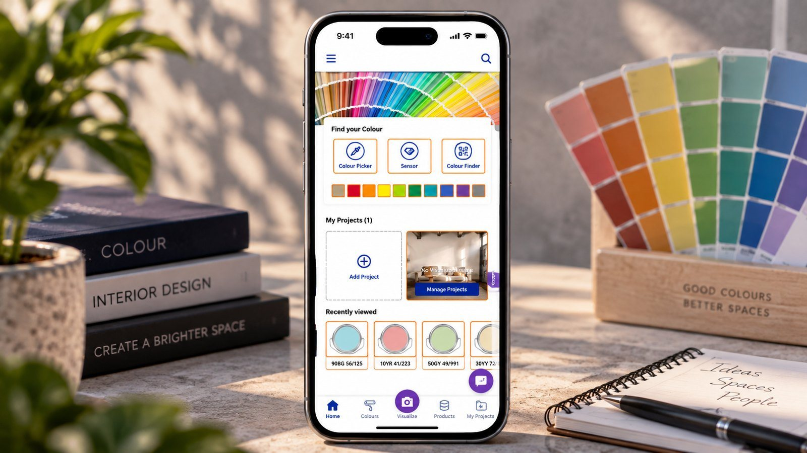
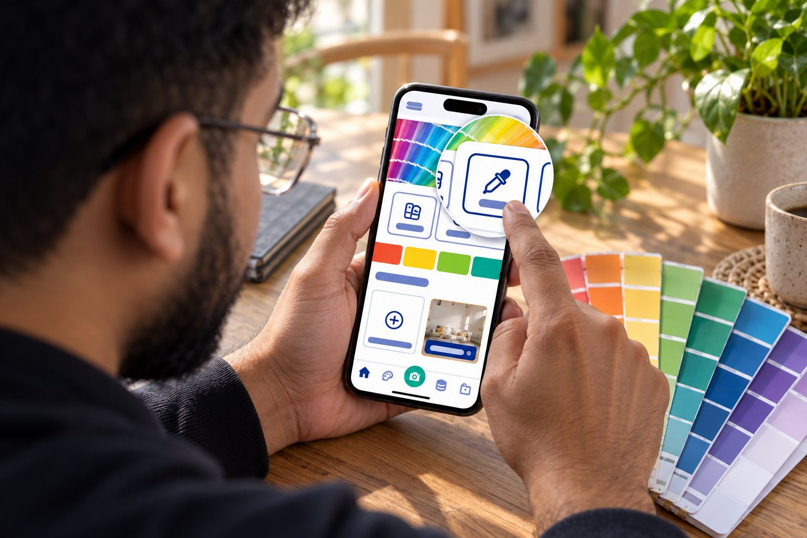
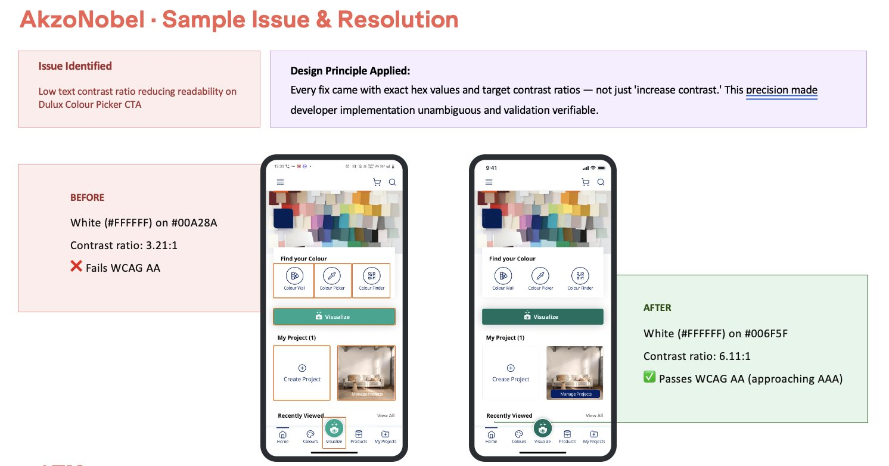

AkzoNobel
Accessibility Governance Programme
I led accessibility testing across four AkzoNobel digital platforms (Visualizer, Canopy, Wood and Cooper). Every finding was mapped to WCAG, rated by user impact and handed over as an exact, testable fix, and the fixes shipped without moving a release.

A colour product is a visual product, which is exactly where accessibility breaks first.
Tools usedAccessibility was handled differently on every platform
AkzoNobel's apps help people find, match and visualise paint colour. Nearly every core task depends on colour, contrast and small visual cues, which is exactly where people with low vision, colour-vision deficiency, motor impairments or a screen reader get left out.
- 01Inconsistent
The same patterns (CTAs, search, cards, navigation) behaved differently across the four platforms.
- 02Found late
Issues surfaced near release, when fixes competed with feature work.
- 03Vague to act on
Tickets said “improve contrast”. Developers had nothing to build and QA had nothing to verify.
The design problem underneath: making accessibility part of normal delivery, not a late audit, across teams with different constraints.
What I owned
- 01Audit strategy
Defined scope, journeys, tools and the severity model for all four platforms.
- 02Expert evaluation
Ran the automated scans plus the manual and assistive-technology testing myself.
- 03Fix specification
Wrote every fix as an exact, verifiable spec in Figma.
- 04Delivery & advocacy
Prioritised fixes with product owners and validated them with developers.
Designing for people the visual UI was leaving out
Real conditions, not ideal ones
I tested the way affected users actually use a phone: magnified, with enlarged system text, or with a screen reader.
- Low vision and glare: contrast and scalable text
- Colour-vision deficiency: cues beyond colour
- Screen-reader users: named controls and logical order
- Motor impairments: large, well-spaced targets

Enterprise realities that shaped the work
| Constraint | Design response |
|---|---|
| Four platforms, four teams | One shared severity model and spec format across all of them |
| Release dates could not move | Severity-led planning: high-impact issues in sprint, the rest roadmapped |
| Strong brand colour palette | Tonal adjustments within the brand family, not new colours |
| Existing design systems | Fixes made at component level so they apply everywhere |
| Mixed iOS and Android stacks | Platform-native tooling and guidance (Dynamic Type, 44pt / 48dp) |
A five-step audit method
I audited core end-to-end journeys, not isolated screens, so findings reflected real user goals.
Journeys in scope- 01Scope
Core journeys across all four platforms.
- 02Scan
Accessibility Scanner and Accessibility Inspector on every screen.
- 03Test with AT
TalkBack, VoiceOver and the largest text size on real devices.
- 04Map & specify
WCAG criterion, severity, exact fix in Figma.
- 05Verify
Re-scan plus screen reader. Closed only when both passed.
| Severity | Definition | Delivery rule |
|---|---|---|
| High | Blocks or seriously hinders a core task | Fixed in the current sprint |
| Medium | Causes friction or inconsistency | Scheduled in the roadmap |
| Low | Best practice or cosmetic | Bundled with related work |
What the evidence showed
- 23
Android Scanner suggestions on the Dulux home screen alone, covering contrast and touch targets
- 37
iOS Inspector warnings across five Colour Sensor screens
- 2.35:1
Search field text contrast (#A9A9A9 on #FFFFFF). WCAG requires 4.5:1
| Pattern | WCAG | Severity | Who it affects |
|---|---|---|---|
| Text doesn't scale with system font size | 1.4.4 Resize Text | High | Low-vision users |
| Brand colours fail text contrast | 1.4.3 Contrast (Minimum) | High | Low vision, glare, older users |
| Icon-only controls without accessible names | 1.1.1 · 4.1.2 | High | Screen-reader users |
| Small touch targets on tiles, cards and navigation | 44pt iOS / 48dp Android · WCAG 2.2 2.5.8 | Medium | Users with motor impairments |
Four patterns, not hundreds of bugs
- Fix the pattern, not the screen
Most warnings came from four repeated patterns. Fixing each one at component level fixed every screen that used it.
- Precision gets fixes shipped
Exact hex values and target ratios turned debates into tasks a developer could finish in one pass.
- Automation is only half the picture
Scanners found contrast and labels. Screen-reader testing revealed focus order and broken flows.
- Brand and accessibility can coexist
A darker tone of the same brand colour kept the identity and passed contrast.
The Visualize CTA, from finding to verified fix
The primary call to action used a brand green that failed contrast. Instead of introducing a new colour, I darkened the existing green, so it stayed recognisably Dulux and became readable.

Before: orange outlines mark elements flagged by the scanner. After: compliant CTA and cleaned-up targets.
“Improve the contrast on the Visualize button.” Open to interpretation, so it was hard to estimate and impossible to verify.
Exact hex, criterion, target ratio and verification steps. Built in one pass and checked by QA in seconds.
How every fix was verified
- 01Re-scan
Same tool that raised the issue.
- 02Re-measure
Contrast against the specified hex.
- 03Screen reader
Original task again with TalkBack / VoiceOver.
- 04Large text
Re-test at the largest system size.
- 05Close
Only when every check passed.
Shipping accessibility without slowing releases
- 01Severity-led planning
High-impact issues in the current sprint; the rest roadmapped so release dates held.
- 02Specs, not opinions
Figma annotations for contrast, labels and text scaling for each component.
- 03Tight developer loops
Fix, retest on device, close. Repeat until it passes.
- 04Business framing
Accessibility presented as quality, trust and compliance risk, not extra scope.
What it added up to
- 4
Platforms audited and remediated with one shared method
- 3.21 → 6.11
Primary CTA contrast ratio, well above AA
- iWin
Accessibility Excellence Award, 2025
- Consistent standard
One severity model and spec format used across all four platforms.
- Verifiable fixes
Every fix tied to a WCAG criterion, an exact value and a retest.
- Releases held
Fixes shipped inside planned sprints, without moving release dates.
- Lower risk
Reduced compliance exposure and stronger brand trust.
Accessibility is a delivery discipline
This programme taught me that accessibility succeeds or fails in the ticket, not the audit report. A precise spec gets shipped; a vague one gets deferred.
- What I learned
Automated tools find part of the problem. Assistive technology shows how it affects people. Both are needed before you can call something done.
- What I would add next
Accessibility tokens in the design system, automated contrast checks in CI, and usability sessions with users with disabilities.